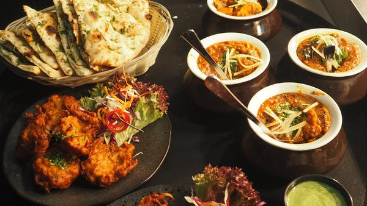
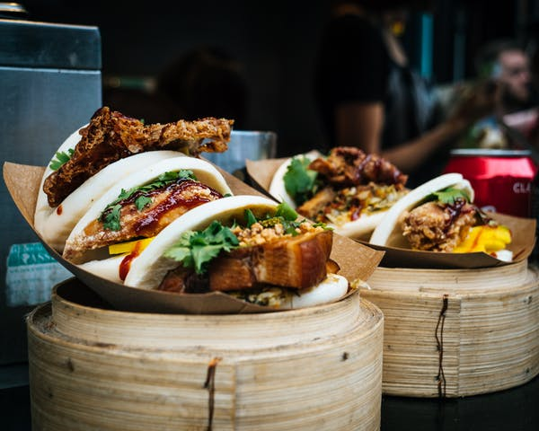
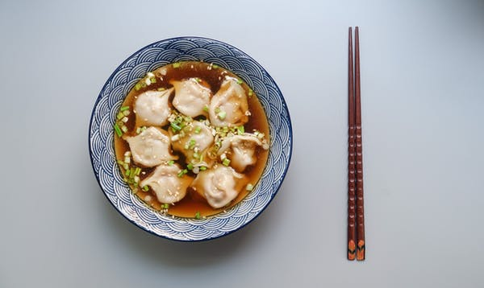
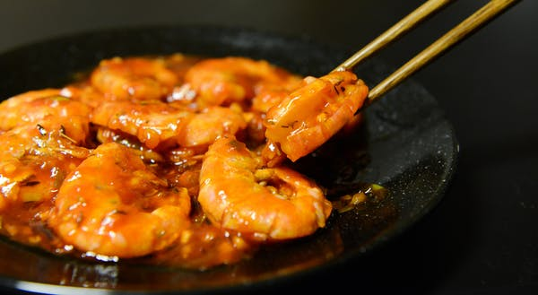
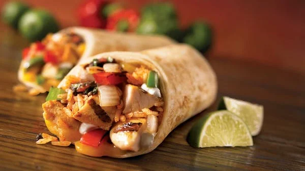
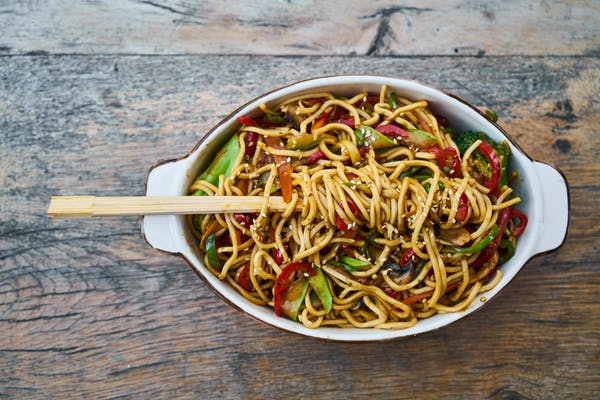
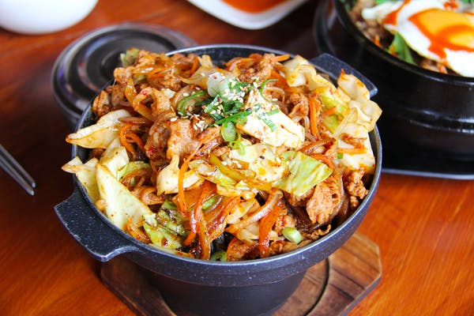
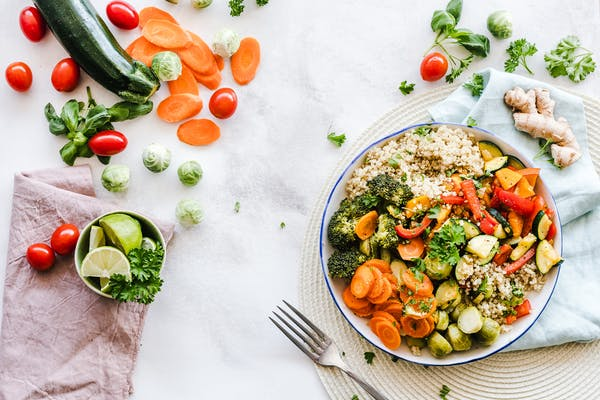

Hola, Urian 👋
Que te gustaria pedir hoy?- Comidas
- Desayunos
- Almuerzos
- Cenas
- Pizzas
- Hamburguesas

WANTON Premium
Favorita
15 min

YOUTIAO Premium
Favorita
15 min

SOPA DE WONTON Premium
Favorita
15 min

POLLO GONG BAO Premium
Favorita
15 min

CHOP SUEY Premium
Favorita
15 min

HUO GUO Especial
Favorita
15 min

JIAOZI Premium
Favorita
15 min

CHOW MEIN Premium
Favorita
15 min

HUO GUO O HOT POT Premium
Favorita
15 min
Mary Smith
Especial con tomates
15 min
Shii Seem
Tuna Tataki dish
30 min